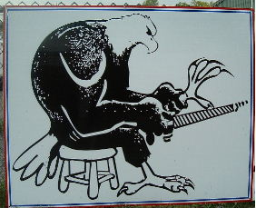
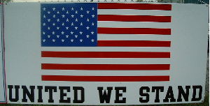
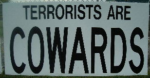

These three signs were on Route 20 near where it crosses I-90 about 20
miles southeast of Albany, NY. I photographed them on 27 September,
2001. They were posted on the chain link fence outside a sign-making
shop. Click on any image for a page with a full-resolution image
scaled down by a factor of two to fit on your screen. Click on that
image for the full-size version.


